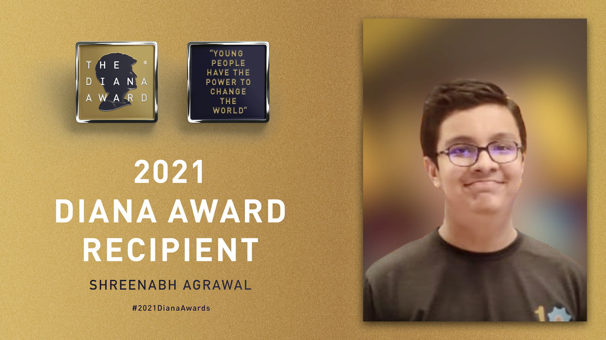

The Diana Award
The Award is the most prestigious accolade a young person aged 9-25 can receive for their social action or humanitarian work.

Shreenabh Agrawal, aged 17, from the Chanda Devi Saraf School and Junior College, Nagpur has been recognized with the highest accolade a young person can achieve for social action or humanitarian efforts – The Diana Award. In a glittering Virtual ceremony, Prince Harry, the Duke of Sussex, the younger son of Princess Diana congratulated all the winners on behalf of the Royal Family.
Shreenabh has been awarded for going above and beyond in his daily life to create and sustain positive change. Shreenabh is a problem solver. After seeing how his grandmother was always looking for someone to talk to, he launched his 'Oldy Goldy Clubs'. The project brings together senior citizens and young people to bring companionship and support into each other’s lives. With the pandemic limiting social contact, he compiled an ebook of 23 “Goldy Oldy” life stories. In his ‘Save Farms and Farmers’ project, he designed an environmentally friendly, zero-cost replacement to hazardous chemical pesticides. Despite initial resistance from farmers, Shreenabh met with local leaders to build community trust, after which more than 20,000 farmers and their families have directly benefitted from his innovative research.
Established in memory of Diana, Princess of Wales, the Award is given out by the charity of the same name and has the support of both her sons, The Duke of Cambridge and The Duke of Sussex.
Tessy Ojo, CEO of The Diana Award, says:
We congratulate all our new Diana Award recipients from the UK and all over the globe who are changemakers for their generation. We know by receiving this honor they will inspire more young people to get involved in their communities and begin their journey as active citizens. For over twenty years The Diana Award has valued and invested in young people encouraging them to continue to make positive change in their communities and the lives of others.
Nominations of the Award recipients are put forward by adults who know the young people in a professional capacity and recognized their efforts as a positive contribution to society. Through a rigorous nomination process, these nominators had to demonstrate the nominee’s impact in five key areas: Vision, Social Impact, Inspiring Others, Youth Leadership, and Service Journey.
There are 12 Diana Award Judging Panels representing each UK region or nation and a further three panels representing countries outside of the UK. Each panel consists of three judges; one young person, an education or youth work professional, and a business or government representative. The panels have an important main purpose: to determine which nominations from each UK region/nation/country will receive The Diana Award. Nominations are judged using the Criteria Guide and Scoring Guide which have been created to measure the quality of youth social action. Shreenabh has made the nation proud by winning this accolade after going through this rigorous process.
https://diana-award.org.uk/roll-of-honour-2021/
 The Hitavada
The Hitavada